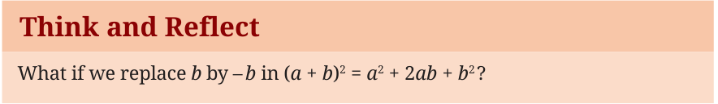
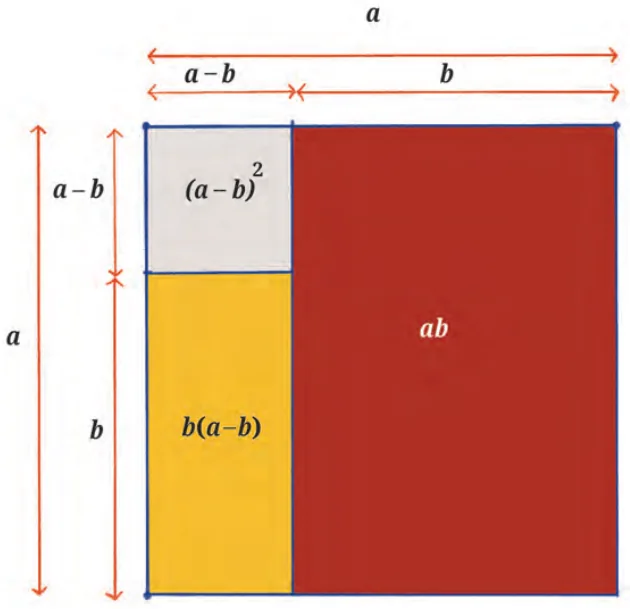

The identity (a + b) \(= a + 2ab + b\) can also be used to find factors of some algebraic expressions.
Example 5: Consider the algebraic expression \(x + 4x + 4\). We observe that
\(x =\) (x) , \(4 = 2\) and \(4x = 2(2)(x)\).
Hence, \(x + 4x + 4 = x + 2(x)(2) + 2\) can be compared with \(a + 2(a)(b) + b\) , where \(a = x\) and \(b = 2\).
We conclude that \(x + 4x + 4 =\) (x \(+ 2)\) . Therefore, we can say that
(x \(+ 2)\) is a factor of \(x + 4x + 4\).
Example 6: Let us try to find factors of another algebraic expression:
\(36x + 12x + 1\).
Writing this in the form \(a + 2ab + b\) we get
\(36x + 12x + 1 = (6x) + 2(6x)(1) + 1\) ,
where \(a = 6x\) and \(b = 1\). Therefore, \(36x + 12x + 1 = (6x + 1)\) .
Thus \((6x + 1)\) is a factor of \(36x + 12x + 1\).
Example 7: Let us try to factor \(50p + 60pq + 18q\) . What will a and b be in this case? Try to think of a term whose square is \(50p^{2}\). It is 50p. But if we want to avoid using the square root symbol we may proceed as follows: We observe that 2 is a common factor of the terms
50p , 60pq, 18q .
Thus \(50p + 60pq + 18q = 2(25p + 30pq + 9q\) ).
Now let us focus on the expression \(25p + 30pq + 9q\) .
Think of a term whose square is 25p . What about 9q ?
\(50p + 60pq + 18q\)
= 2(5p) +2(5p)(3q) +(3q)
\(= 2 (5p + 3q)\) .
Here we have used the identity (a + b) \(= a + 2ab + b\) to factor the
expression \(25p + 30pq + 9q\) , after taking 2 as a common factor. In all the examples described so far, we have used the identity
(a + b) \(= a + 2ab + b\) to find factors of different algebraic expressions.

We get (a - b) \(= a - 2ab + b\) , which is also an identity and can be
used in ways similar to (a + b) \(= a + 2ab + b\) . Let us revisit the pattern we observed in Example 1. Any three consecutive numbers can be taken as (n \(- 1)\), n and (n \(+ 1)\). Their
respective squares are of the form (n \(- 1)\) , n and (n +1) . The sum of the smallest and largest squares is
(n \(- 1) +\) (n \(+ 1) = n - 2n + 1 + n + 2n + 1 = 2n + 2\).
Subtracting 2n from this leads to 2. Hence you always get 2! This is in fact a proof of the fact that if we add the smallest and largest of any three consecutive square numbers and subtract two times the middle square number, we will always arrive at 2.
Just as the identity (a + b) \(= a + 2ab + b\) can be used to find the
squares of numbers, we can also use (a - b) \(= a - 2ab + b\) in a similar manner.
Example 8: Suppose we have to calculate 29 . We can express this as
\((30 - 1)^{2} = 30^{2} - 2 \times 30 \times 1 + 1^{2} = 900 - 60 + 1 = 841\).
To visualise the identity (a - b) \(= a - 2ab + b\) , let us draw a square of side a units and split a in two parts, one of length (a - b) units and another of length b units. Then the figure will look like this.

The area of the big square is a square units. The small square has
an area of (a - b) square units. The larger rectangle has area ab square units while the smaller rectangle has area b (a - b) square units. Thus,
to obtain (a - b) we can subtract the areas of the rectangles from the big square.
We obtain (a - b) \(= a -\) ab - b(a - b) \(= a -\) ab - ba \(+ b\)
\(= a - 2ab + b\) .
- 1.Factor completely:
- (i)\(9x + 24xy + 16y\)
- (ii)\(4s + 20st + 25t\)
- (iii)\(49x + 28xy + 4y\)
- (iv)\(64p + \frac{324}{39}\) pq \(+ q\)
*(v) \(3a + 4ab + \frac{4}{3} b\)
*(vi) \(\frac{9}{5} s +6sv +5v\)
(Hint: 2 was taken out as a common factor in Example 7. Is it possible to do something similar in Exercises (v) and (vi) above?)
- 2.Find the values of the following using the identity
(a - b) \(= a - 2ab + b\) .
- (i)(79) (ii) (193) (iii) (299)